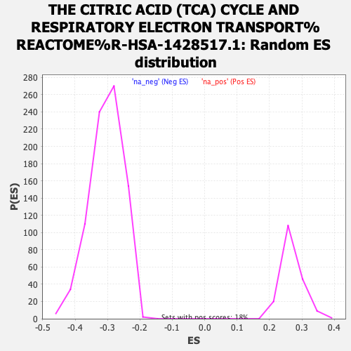

| | | Dataset | ranked_tn_list |
| Phenotype | NoPhenotypeAvailable |
| Upregulated in class | na_neg |
| GeneSet | THE CITRIC ACID (TCA) CYCLE AND RESPIRATORY ELECTRON TRANSPORT%REACTOME%R-HSA-1428517.1 |
| Enrichment Score (ES) | -0.6164563 |
| Normalized Enrichment Score (NES) | -2.0283344 |
| Nominal p-value | 0.0 |
| FDR q-value | 1.6737894E-4 |
| FWER p-Value | 0.002 |
Table: GSEA Results Summary
_CYCLE_AND_RESPIRATORY_ELECTRON_TRANSPORT_REACTOME_R-HSA-1428517.1_55.png) Fig 1: Enrichment plot: THE CITRIC ACID (TCA) CYCLE AND RESPIRATORY ELECTRON TRANSPORT%REACTOME%R-HSA-1428517.1
Fig 1: Enrichment plot: THE CITRIC ACID (TCA) CYCLE AND RESPIRATORY ELECTRON TRANSPORT%REACTOME%R-HSA-1428517.1
Profile of the Running ES Score & Positions of GeneSet Members on the Rank Ordered List
| SYMBOL | RANK IN GENE LIST | RANK METRIC SCORE | RUNNING ES | CORE ENRICHMENT | | 1 | ME3 | 478 | 5.655 | -0.0132 | No |
| 2 | UCP2 | 738 | 4.498 | -0.0167 | No |
| 3 | PDK3 | 789 | 4.322 | -0.0084 | No |
| 4 | SLC16A3 | 1584 | 2.363 | -0.0485 | No |
| 5 | SCO2 | 2068 | 1.689 | -0.0722 | No |
| 6 | NDUFS5 | 2195 | 1.572 | -0.0755 | No |
| 7 | PDK4 | 2269 | 1.514 | -0.0758 | No |
| 8 | COQ10B | 2317 | 1.472 | -0.0748 | No |
| 9 | SLC16A1 | 2491 | 1.327 | -0.0814 | No |
| 10 | MPC2 | 2600 | 1.255 | -0.0844 | No |
| 11 | LDHA | 2709 | 1.176 | -0.0877 | No |
| 12 | PDP1 | 2823 | 1.098 | -0.0914 | No |
| 13 | NDUFAF6 | 4510 | 0.400 | -0.1885 | No |
| 14 | NDUFS8 | 4594 | 0.380 | -0.1924 | No |
| 15 | NDUFAF7 | 4824 | 0.322 | -0.2048 | No |
| 16 | NDUFAB1 | 4841 | 0.319 | -0.2050 | No |
| 17 | VDAC1 | 4878 | 0.312 | -0.2062 | No |
| 18 | COX11 | 5350 | 0.209 | -0.2331 | No |
| 19 | PDK2 | 5880 | 0.118 | -0.2636 | No |
| 20 | PDK1 | 5893 | 0.115 | -0.2640 | No |
| 21 | COX7A2L | 6029 | 0.096 | -0.2716 | No |
| 22 | IDH2 | 6157 | 0.078 | -0.2788 | No |
| 23 | COX18 | 6502 | 0.038 | -0.2987 | No |
| 24 | DLST | 6555 | 0.030 | -0.3017 | No |
| 25 | UQCRC1 | 6840 | -0.001 | -0.3182 | No |
| 26 | PDP2 | 6947 | -0.012 | -0.3243 | No |
| 27 | PM20D1 | 6999 | -0.018 | -0.3272 | No |
| 28 | FAHD1 | 7402 | -0.067 | -0.3505 | No |
| 29 | BSG | 7416 | -0.069 | -0.3510 | No |
| 30 | TRAP1 | 7455 | -0.073 | -0.3531 | No |
| 31 | NDUFA4 | 7605 | -0.092 | -0.3615 | No |
| 32 | NDUFV2 | 7823 | -0.120 | -0.3738 | No |
| 33 | ME2 | 7827 | -0.121 | -0.3737 | No |
| 34 | LDHC | 8164 | -0.164 | -0.3928 | No |
| 35 | NDUFA13 | 8399 | -0.198 | -0.4059 | No |
| 36 | NDUFB10 | 8759 | -0.254 | -0.4261 | No |
| 37 | DLAT | 8761 | -0.254 | -0.4255 | No |
| 38 | SLC16A8 | 8779 | -0.257 | -0.4259 | No |
| 39 | NDUFA11 | 9007 | -0.298 | -0.4383 | No |
| 40 | CS | 9113 | -0.316 | -0.4436 | No |
| 41 | LDHB | 9539 | -0.385 | -0.4673 | No |
| 42 | UCP3 | 9647 | -0.405 | -0.4725 | No |
| 43 | COX14 | 10008 | -0.476 | -0.4922 | No |
| 44 | SLC25A14 | 10144 | -0.504 | -0.4988 | No |
| 45 | GSTZ1 | 10179 | -0.512 | -0.4994 | No |
| 46 | PDHB | 10182 | -0.512 | -0.4982 | No |
| 47 | NDUFAF5 | 10215 | -0.521 | -0.4987 | No |
| 48 | NDUFAF2 | 10419 | -0.569 | -0.5091 | No |
| 49 | TMEM126B | 10551 | -0.598 | -0.5152 | No |
| 50 | LRPPRC | 10609 | -0.615 | -0.5169 | No |
| 51 | ATP5F1E | 10731 | -0.646 | -0.5223 | No |
| 52 | NDUFB8 | 10790 | -0.658 | -0.5239 | No |
| 53 | ADHFE1 | 10830 | -0.668 | -0.5245 | No |
| 54 | COX7C | 11145 | -0.763 | -0.5408 | No |
| 55 | PPARD | 11205 | -0.777 | -0.5422 | No |
| 56 | COX6B1 | 11373 | -0.825 | -0.5498 | No |
| 57 | UQCRQ | 11386 | -0.827 | -0.5484 | No |
| 58 | GLO1 | 11579 | -0.883 | -0.5573 | No |
| 59 | ATP5MC2 | 11585 | -0.885 | -0.5553 | No |
| 60 | NDUFAF3 | 11642 | -0.905 | -0.5562 | No |
| 61 | SDHB | 11827 | -0.958 | -0.5644 | No |
| 62 | ACAD9 | 12255 | -1.107 | -0.5864 | No |
| 63 | ATP5MG | 12402 | -1.164 | -0.5919 | No |
| 64 | UQCRB | 12411 | -1.165 | -0.5893 | No |
| 65 | SUCLG2 | 12643 | -1.265 | -0.5995 | No |
| 66 | NDUFAF1 | 12707 | -1.293 | -0.5998 | No |
| 67 | NDUFS4 | 12760 | -1.317 | -0.5995 | No |
| 68 | COA1 | 12831 | -1.351 | -0.6000 | No |
| 69 | COX4I1 | 12966 | -1.412 | -0.6042 | No |
| 70 | NDUFB9 | 12989 | -1.425 | -0.6018 | No |
| 71 | TMEM186 | 13179 | -1.525 | -0.6088 | No |
| 72 | COX19 | 13273 | -1.573 | -0.6102 | No |
| 73 | DMAC2L | 13331 | -1.601 | -0.6094 | No |
| 74 | CYC1 | 13357 | -1.617 | -0.6067 | No |
| 75 | TACO1 | 13501 | -1.701 | -0.6106 | No |
| 76 | NDUFS3 | 13603 | -1.752 | -0.6119 | Yes |
| 77 | UQCRH | 13611 | -1.754 | -0.6078 | Yes |
| 78 | SLC25A27 | 13652 | -1.779 | -0.6055 | Yes |
| 79 | SDHC | 13703 | -1.801 | -0.6038 | Yes |
| 80 | IDH3A | 13715 | -1.811 | -0.5997 | Yes |
| 81 | IDH3G | 13781 | -1.855 | -0.5987 | Yes |
| 82 | COQ10A | 13842 | -1.896 | -0.5973 | Yes |
| 83 | MDH2 | 13908 | -1.945 | -0.5961 | Yes |
| 84 | NDUFB4 | 14003 | -1.991 | -0.5964 | Yes |
| 85 | NDUFS7 | 14130 | -2.064 | -0.5984 | Yes |
| 86 | COX5A | 14135 | -2.067 | -0.5933 | Yes |
| 87 | L2HGDH | 14210 | -2.116 | -0.5921 | Yes |
| 88 | COX16 | 14248 | -2.148 | -0.5887 | Yes |
| 89 | ETFB | 14266 | -2.163 | -0.5841 | Yes |
| 90 | D2HGDH | 14348 | -2.215 | -0.5831 | Yes |
| 91 | NDUFS6 | 14367 | -2.230 | -0.5784 | Yes |
| 92 | COX6A1 | 14424 | -2.269 | -0.5758 | Yes |
| 93 | ATP5MF | 14507 | -2.340 | -0.5745 | Yes |
| 94 | NDUFA9 | 14528 | -2.359 | -0.5696 | Yes |
| 95 | ATP5ME | 14534 | -2.361 | -0.5638 | Yes |
| 96 | COX5B | 14607 | -2.419 | -0.5617 | Yes |
| 97 | NDUFV1 | 14706 | -2.485 | -0.5610 | Yes |
| 98 | SURF1 | 14713 | -2.491 | -0.5549 | Yes |
| 99 | NDUFA2 | 14737 | -2.505 | -0.5498 | Yes |
| 100 | ETFA | 14838 | -2.585 | -0.5489 | Yes |
| 101 | UQCR11 | 14884 | -2.631 | -0.5448 | Yes |
| 102 | NDUFB5 | 14898 | -2.654 | -0.5387 | Yes |
| 103 | NDUFC1 | 14952 | -2.708 | -0.5347 | Yes |
| 104 | NDUFB7 | 14959 | -2.714 | -0.5281 | Yes |
| 105 | UQCRFS1 | 14966 | -2.721 | -0.5214 | Yes |
| 106 | NDUFA8 | 15030 | -2.791 | -0.5178 | Yes |
| 107 | NDUFS1 | 15060 | -2.822 | -0.5122 | Yes |
| 108 | ATP5PB | 15084 | -2.844 | -0.5062 | Yes |
| 109 | NDUFB6 | 15111 | -2.878 | -0.5003 | Yes |
| 110 | ATP5F1D | 15115 | -2.883 | -0.4930 | Yes |
| 111 | PDHA1 | 15134 | -2.901 | -0.4866 | Yes |
| 112 | NDUFB1 | 15177 | -2.958 | -0.4814 | Yes |
| 113 | NDUFB2 | 15237 | -3.022 | -0.4770 | Yes |
| 114 | NDUFS2 | 15244 | -3.031 | -0.4695 | Yes |
| 115 | ME1 | 15406 | -3.235 | -0.4705 | Yes |
| 116 | NDUFC2 | 15428 | -3.252 | -0.4634 | Yes |
| 117 | NDUFA6 | 15492 | -3.333 | -0.4584 | Yes |
| 118 | PDPR | 15542 | -3.380 | -0.4525 | Yes |
| 119 | ATP5PF | 15632 | -3.485 | -0.4487 | Yes |
| 120 | SUCLA2 | 15685 | -3.559 | -0.4425 | Yes |
| 121 | COX6C | 15691 | -3.570 | -0.4336 | Yes |
| 122 | IDH3B | 15740 | -3.655 | -0.4269 | Yes |
| 123 | NDUFAF4 | 15801 | -3.736 | -0.4208 | Yes |
| 124 | NDUFA10 | 15834 | -3.773 | -0.4129 | Yes |
| 125 | SDHA | 15856 | -3.816 | -0.4043 | Yes |
| 126 | NDUFB11 | 15880 | -3.863 | -0.3956 | Yes |
| 127 | ATP5PD | 15906 | -3.904 | -0.3870 | Yes |
| 128 | TIMMDC1 | 15966 | -4.025 | -0.3800 | Yes |
| 129 | ATP5F1A | 15971 | -4.032 | -0.3698 | Yes |
| 130 | ATP5PO | 15977 | -4.040 | -0.3597 | Yes |
| 131 | ACO2 | 15978 | -4.041 | -0.3492 | Yes |
| 132 | UQCRC2 | 15992 | -4.060 | -0.3395 | Yes |
| 133 | COX8A | 16029 | -4.115 | -0.3310 | Yes |
| 134 | ATP5MC3 | 16070 | -4.196 | -0.3224 | Yes |
| 135 | NDUFA3 | 16075 | -4.206 | -0.3118 | Yes |
| 136 | UQCR10 | 16134 | -4.327 | -0.3040 | Yes |
| 137 | COX7B | 16225 | -4.497 | -0.2976 | Yes |
| 138 | RXRA | 16253 | -4.558 | -0.2874 | Yes |
| 139 | NDUFA12 | 16288 | -4.619 | -0.2775 | Yes |
| 140 | SDHD | 16325 | -4.707 | -0.2674 | Yes |
| 141 | ATP5F1B | 16343 | -4.739 | -0.2561 | Yes |
| 142 | ATP5F1C | 16455 | -4.991 | -0.2497 | Yes |
| 143 | NUBPL | 16478 | -5.046 | -0.2379 | Yes |
| 144 | DLD | 16490 | -5.067 | -0.2255 | Yes |
| 145 | NNT | 16497 | -5.084 | -0.2127 | Yes |
| 146 | NDUFB3 | 16518 | -5.126 | -0.2006 | Yes |
| 147 | PDHX | 16532 | -5.168 | -0.1880 | Yes |
| 148 | OGDH | 16550 | -5.215 | -0.1755 | Yes |
| 149 | NDUFA5 | 16653 | -5.533 | -0.1672 | Yes |
| 150 | ATP5MC1 | 16750 | -5.937 | -0.1574 | Yes |
| 151 | COX20 | 16859 | -6.460 | -0.1470 | Yes |
| 152 | SUCLG1 | 16882 | -6.555 | -0.1314 | Yes |
| 153 | FH | 16896 | -6.616 | -0.1150 | Yes |
| 154 | ECSIT | 16949 | -6.909 | -0.1002 | Yes |
| 155 | NDUFV3 | 16983 | -7.034 | -0.0839 | Yes |
| 156 | ETFDH | 17010 | -7.190 | -0.0669 | Yes |
| 157 | CYCS | 17018 | -7.227 | -0.0486 | Yes |
| 158 | SCO1 | 17145 | -8.148 | -0.0349 | Yes |
| 159 | MPC1 | 17221 | -8.953 | -0.0161 | Yes |
| 160 | NDUFA1 | 17223 | -8.980 | 0.0070 | Yes |
Table: GSEA details [plain text format]

Fig 2: THE CITRIC ACID (TCA) CYCLE AND RESPIRATORY ELECTRON TRANSPORT%REACTOME%R-HSA-1428517.1: Random ES distribution
Gene set null distribution of ES for THE CITRIC ACID (TCA) CYCLE AND RESPIRATORY ELECTRON TRANSPORT%REACTOME%R-HSA-1428517.1